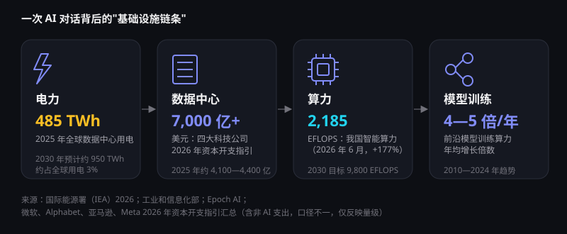

算力与能源：AI 时代的"新基建"
每一次与 AI 的对话，背后都是芯片、数据中心和电网在运转。算力决定了 AI 能走多快，能源决定了它能走多远。2026 年，算力与能源已成为全球 AI 竞争的核心战场。
一次 AI 对话背后的链条
从发电厂到你屏幕上的回答，AI 依赖一条完整的基础设施链条。任何一环的瓶颈，都会限制整个产业的发展速度。

为什么需要这么多算力？
据 Epoch AI 统计，前沿模型的训练算力每年增长 4—5 倍。模型越大、训练越久，能力通常越强，这驱动着对芯片的持续需求。
推理正在成为主力
训练是一次性投入，推理则随用户量持续增长。智能体反复思考、多次调用工具，让单个任务消耗的算力成倍增加。
瓶颈正在转向电力
芯片之外，能否及时获得稳定的电力供应和电网接入，正在成为数据中心建设的关键约束。
全球：史上最大规模的基础设施投资
2.59 万亿美元：2026 年全球 AI 支出预测，同比 +47%（Gartner）
45%+其中 AI 基础设施的支出占比（Gartner）
7,000 亿+美元：四大科技公司 2026 年资本开支指引汇总
+50%2025 年 AI 专用数据中心用电增速（IEA）
数字背后的含义
- 2025 年全球数据中心用电增长 17%，其中 AI 专用数据中心增长 50%，增速与 IEA 此前预测基本一致
- 按 IEA 预测，2030 年数据中心用电将比 2025 年翻一番，接近 950 TWh
- 微软、Alphabet、亚马逊、Meta 不断上调资本开支指引，2026 年第一季度四家合计资本开支同比增长约 80%
资本开支为各公司财报指引的汇总，包含部分非 AI 支出，各家口径不同，仅反映量级。
中国：智能算力一年增长 177%
截至 2026 年 6 月，我国智能算力规模达 2,185 EFLOPS（FP16），同比增长 177%；首个全国产 10 万卡人工智能超集群投入使用。工信部提出，到 2030 年智能算力达到 9,800 EFLOPS。
能源挑战与应对
挑战
电从哪里来？
- 据 IEA 估算，一座典型的 AI 数据中心用电量相当于 10 万户家庭，在建的最大型项目可达其 20 倍；而电网扩容周期往往长于数据中心建设周期
- 数据中心高度集中的地区面临电价上涨与供电紧张的压力
- 冷却用水与碳排放引发环境方面的担忧
应对
多管齐下提升能效
- 硬件与制冷：新一代芯片能效持续提升，液冷技术降低冷却能耗
- 算法效率：混合专家、蒸馏等技术让同等能力所需算力大幅下降——GPT-3.5 级模型调用价格两年内降低约 280 倍
- 清洁能源：科技公司大规模采购风电、光伏，并探索核能供电
- 空间布局：把算力建在可再生能源丰富的地区，如我国"东数西算"
值得关注：AI 用电增长虽快，但据 IEA 预测，到 2030 年数据中心用电仍只占全球用电约 3%。真正的挑战在于"局部"——电力需求高度集中在少数地区，对当地电网形成冲击。